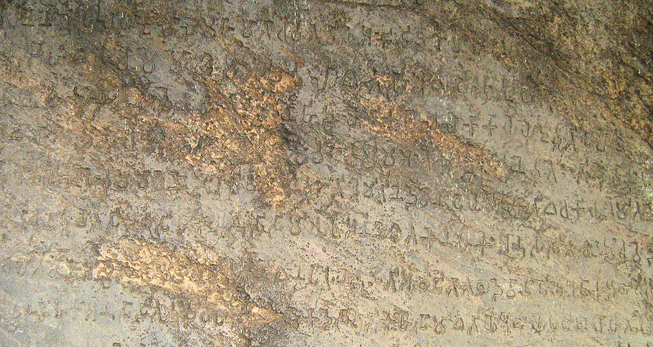

mailto:payer@payer.de
Zitierweise | cite as:
Payer, Alois <1944 - >: Sanskritkurs. -- 41. Lektion 41. -- Fassung vom 2009-01-21. -- URL: http://www.payer.de/sanskritkurs/lektion41.htm
Erstmals hier publiziert: 2009-01-04
Überarbeitungen: 2009-01-21 [Verbesserungen]
Anlass: Lehrveranstaltungen 1980 - 1984
©opyright: Dieser Text steht der Allgemeinheit zur Verfügung. Eine Verwertung in Publikationen, die über übliche Zitate hinausgeht, bedarf der ausdrücklichen Genehmigung des Verfassers
Dieser Text ist Teil der Abteilung Sanskrit von Tüpfli's Global Village Library
Falls Sie die diakritischen Zeichen nicht dargestellt bekommen, installieren Sie eine Schrift mit Diakritika wie z.B. Tahoma.
Die Devanāgarī-Zeichen sind in Unicode kodiert. Sie benötigen also eine Unicode-Devanāgarī-Schrift.
पुस्तकस्था च या विद्या
परहस्ते च यद्धनम् ।
कार्यकाले समुत्पन्ने
न सा विद्या न तद्धनम् ॥१॥
Erklärung: पर "anderer"
Abb.: पुस्तकस्था च या विद्या ...
Bhubaneswar = ଭୁବନେଶ୍ବର
[Bildquelle: souravdas. --
http://www.flickr.com/photos/souravdas/2786531408/. -- Zugriff am
2009-01-02. --

 Creative
Commons Lizenz (Namensnennung, keine kommerzielle Nutzung)]
Creative
Commons Lizenz (Namensnennung, keine kommerzielle Nutzung)]
उपदेशो हि मूर्खाणां
प्रकोपाय न शान्तये ।
पयःपानं भुजङ्गानां
केवलं विषवर्धनम् ॥२॥
Erklärung: पयस् n. = दुग्धम्
| Bildung: Präsensstamm / Passivstamm / Futurstamm + -māna (fem. mānā) |
Beispiele:
यज् 1U, Part.Präs.Ā यजमान 3 "jemand, der im eignen Interesse mit einem Opfer verehrt = Opferherr"
मन् 4Ā, Part.Präs.Ā मन्यमान 3 "ein denkender"
कृ 8U, Part.Präs.Passiv क्रियमाण 3 "etwas, das getan wird"
दा 3U, Part.Fut.Ā दास्यमान 3 "jemand, der im eignen Interesse geben wird"
| Bildung: Schwacher Präsensstamm (in der Form, die er vor der Endung -ate der 3.pl.Ā hat) + -āna (fem. -ānā) |
Beispiele:
Pert.Präs.Ā द्विष् 2U द्वि्षाण
हु 3P <जुह्वान>
ju-hu + ānaसु 5U सुन्वान
su-nu + ānaरुध् रुन्धान
ru-n-dh-ānaतन् तन्वान
tan-u + ānaक्री क्रीणान
krī + n-āna
Um die passive Notwendigkeit auszudrücken ("was getan werden
muss/soll"), kann man Adjektive aus Wurzeln und abgeleiteten
Verbalstämmen wahlweise mit folgenden Suffixen bilden:
|
Das Suffix -तव्य / -तव्या wird an Wurzeln und abgeleitete
Verbalstämme (z.B. Kausativ) auf dieselbe Weise angefügt wie das
Infinitivsuffix -तुम् (s. Lektion 23),
d.h.
oder
Im Kausativ:
|
Beispiele:
जि 1P जेतव्य 3 "jemand, der besiegt werden muss; ein zu besiegender" वृत् 1Ā वर्तितव्य 3 "das, wo man sich befinden soll" बुध् Kaus. बोधयितव्य "jemand, der geweckt werden soll; ein zu erweckender"
| Bildung: Hochstufige Wurzel + -अनीय / -अनीया Kausativ und 10. Präsensklasse: Wurzel, wie sie im Kausativstamm erscheint, ohne -aya- + -अनीय / -अनीया |
Beispiele:
दा 3U दानीय 3 "zu gebendes; was gegeben werden muss" जि 1P जयनीय 3 "zu besiegender" कृ 8U करणीय 3 "zu tuendes" दृश् दर्शनीय 3 "was man sehen muss; sehenswertes" बुध् Kaus. बोधनीय 3
bodh-aya - aya + -anīya"ein zu weckender" दा Kaus. दापनीय 3
dā-paya - aya + -anīya"was man geben lassen muss"
| Bildung: Wurzel (in Tief-, Hoch- oder Dehnstufe) + -य Die genauen Regeln siehe bei Kielhorn, Grammatik der Sanskrit-Sprache, S. 195 - 197! |
Behandlung auslautender Vokale:
| 1. Wurzeln auf -ā bilden dieses Gerundiv auf -eya |
Beispiele:
ज्ञा 9U ज्ञेय 3 "zu wissendes; was erkannt werden muss" दा 3U देय 3 "was gegeben werden muss"
| 2. Wurzeln auf -i /-ī / -u / -ū /-ṛ haben in der Regel Hoch- oder Dehnstufe, es sei denn sie gehören zu denjenigen Wurzeln auf -i / -u /-ṛ, die ein Gerundiv mit dem Suffix -त्य (fem. -त्या) bilden (Liste dieser Wurzeln bei Kielhorn, Grammatik §537). |
Beispiel:
स्मृ 1P स्मर्य 3 "woran man sich erinnern muss"
|
2a. Wurzeln auf -i/-ī haben Hochstufe |
Beispiele:
विक्री 9Ā विक्रेय 3 "zu verkaufen; verkäuflich" नी 1U नेय 3 "zu führender"
Abb.: विक्रेयाणि पुष्पानि
महाराष्ट्रे
[Bildquelle: Harshad Sharma. --
http://www.flickr.com/photos/harshadsharma/57609357/. -- Zugriff am
2009-01-03. --


 Creative
Commons Lizenz (Namensnennung, keine kommerzielle Nutzung, keine Bearbeitung)]
Creative
Commons Lizenz (Namensnennung, keine kommerzielle Nutzung, keine Bearbeitung)]
| 2b. Wurzeln auf -u /-ū ersetzen das hochstufige -o vor dem -ya durch -av, das dehnstufige -au durch -āv. Dehnstufige Bildung bedeutet in diesem Fall Notwendigkeit. |
Beispiel:
स्तु 2U स्तव्य 3 "was gepriesen werden soll" स्ताव्य 3 "was notwendig gepriesen werden muss"
Beispiele für konsonantisch auslautende Wurzeln (Regeln s. Kielhorn, Grammatik § 533ff.):
Tiefstufige Bildung:
Beispiele:
दृश् दृश्य 3 "sehenswert" शास् 2P शिष्य 3 "jemand, der zu belehren ist = Schüler"
Abb.: दृश्यो मन्दिरः
Bahá'í House of Worship, Delhi
[Bildquelle: Ray KOH. --
http://www.flickr.com/photos/raykoh/1497654220/. -- Zugriff am 2009-01-03.
--


 Creative
Commons Lizenz (Namensnennung, keine kommerzielle Nutzung, share alike)]
Creative
Commons Lizenz (Namensnennung, keine kommerzielle Nutzung, share alike)]
Hochstufige Bildung:
Beispiele:
द्विष् 2U द्वेष्य 3 "zu hassender = Feind" भिद् 7U भेद्य 3 "zu spaltender"
| Kausative und Verben der 10. Präsensklasse (चुरादि) Bildung: Kausativ-/Präsensstamm ohne -aya- + -य |
Beispiel:
मन् Kausativ1 मान्य 3
mān-aya - aya + ya"zu ehrender, hochverehrter" 1 eigentl. Denominativ zu मान
Abb.: मान्यः
Dr. Bhimrao Ramji Ambedkar = डॊ.भीमराव रामजी
आंबेडकर (1891 - 1956)
[Bildquelle: Wikipedia. Public domain]
| Liste der Wurzeln auf -i / -u /-ṛ, die ein Gerundiv statt mit
-य / -या mit dem Suffix -त्य (fem. -त्या)
bilden, bei Kielhorn, Grammatik §537. Bildung: tiefstufige Wurzel + -त्य् / -त्या |
Beispiele:
इ 2P इत्य 3 "zu gehender" श्रु 5P श्रुत्य 3 "zu hörender" कृ 8U कृत्य 3 "zu tuender"
Das Gerundiv kann atttributiv verwendet werden:
Das Gerundiv kann auch als Prädikatsnomen in Sätzen mit Passivkonstruktion verwendet werden, die eine Verpflichtung oder einen Befehl ausdrücken (mit न ein Verbot, eine Unmöglichkeit):
|
Abb.: दर्शनीयं नगरं काशी
काशी द्विजैर्द्रष्टवया
मणिकर्णिका घाट, 1922
[Bildquelle LoC/Wikipedia. Public domain]
Weitgehend überschneidet sich der Gebrauch dieser Suffixe
|
| Mit सु- und दुस्- in der Bedeutung "leicht" bzw. "schwer" dürfen Gerundive nicht verbunden werden. Statt dessen stehen तत्पुरुष vom Typ सुकर 3 ("leicht zu tun") (s. Lektion 18) |
मूर्ख m = मूढ
भुजङ्ग m.: Schlange
Abb.: भुजङ्गः
Banded Krait (Bungarus fasciatus)
[Bildquelle: J. Ewart. The poisonous snakes of India, 1878. Public domain]
केवलम् Adv.: nur, allein, vollständig
विष n.: Gift
Abb.: भुजङ्गस्य विषम्
Melken von Schlangengift (Krait), Thailand
[Bildquelle: TheLawleys. --
http://www.flickr.com/photos/lawley/4918566/. -- Zugriff am 2009-01-03. --
 Creative
Commons Lizenz (Namensnennung)]
Creative
Commons Lizenz (Namensnennung)]
शास् 2P शास्ति : zurechtweisen, beherrschen, befehlen, lehren
hat den schwachen Präsensstamm शिष् : शिष्मस् , die 3.Pl. P. hat aber Starken Stamm: शासति (!! Endung -ati) neben gelegentlich शासन्ति. अशासुर्. Auch das ganze आत्मनेपद hat, soweit es vorkommt, den starken Stamm: शास्ते
Perf I शशास, शशासुर्
Fut. शासिष्यति
Pass. -शास्यते । शिष्यते
PPP शिष्ट : gelehrt, weise
Inf. शासितुम्
Absol. -शिष्य । -शास्यdavon:
शासना f.: königliches Edikt, Lehre, Religion

Abb.: शासना
Ashoka-Edikt, Dhauli, Orissa
[Bildquelle: vegdevil. --
http://www.flickr.com/photos/vegdevil/915850174/. -- Zugriff am 2009-01-03.
--

 Creative
commons Lizenz (Namensnennung, keine kommerzielle Nutzung)]
Creative
commons Lizenz (Namensnennung, keine kommerzielle Nutzung)]
शास्त्र n.: Lehre, Lehrwerk
शास्त्रिन् m.: gelehrt, Gelehrter
Abb.: शास्त्री
Max Müller (1823 - 1900), ca. 1898
[Bildquelle: Wikipedia. Public domain]
शिष्य 3: zu belehrender = Schüler
शरण 3: schützend, schirmend ; n. Schutz, Zuflucht, das Zufluchnehmen zu
सङ्घ n.: (zu सम्-हन् : zusammen-schlagen): Schar, Haufe, Gemeinde (z.B. buddhistische)
s. dazu:
Payer, Alois <1944 - >: Vinayamukha : Grundbegriffe der Ordensregeln und des Ordensrechts des Theravāda. -- Teil I. -- (Materialien zu den Grundbegriffen des Buddhismus). -- URL: http://www.payer.de/buddhgrund/vinaya01.htm
कन्या f.: junges Mädchen, Tochter, Jungfrau
अति Präverb: über, über -weg, über - hinaus (im Raum, in der Zeit, an Zahl, an Menge, in der Ordnung, an Macht, an Intensität), überaus
इ + अति 2P अत्येति : vorübergehen
PPP अतीत : n. Vergangenheit
A) Übersetzen Sie die beiden Sprichwörter am Anfang der Lektion.
B) Übersetzen Sie:
बुद्धम् शरणं गच्छामि धर्मं शरणं गच्छामि सङ्घं शरणं गच्छामीति बुद्धगतैर्वक्तव्यम् ॥१॥
काशीं पत्स्ये गङ्गां द्रक्ष्यामि तत्र च मरिष्यामीति मन्यमानो मान्यो वृद्धनरः पुत्रांश्च पुत्रपुत्रांश्च धनं च तत्याज काशीं च प्राव्रजत् । एवं च रोध्यं दुःखं तरिष्यतीति मन्ये ॥२॥
Abb.: काशीं पत्स्ये गङ्गां द्रक्ष्यामि ...
[Bildquelle: jpereira_net. --
http://www.flickr.com/photos/jpereira_net/2914877721/. -- Zugriff am
2009-01-04. --

 Creative
Commons Lizenz (Namensnennung, keine Bearbeitung)]
Creative
Commons Lizenz (Namensnennung, keine Bearbeitung)]
कन्यां व्युवह तस्यां च पुत्रमजनयं महाधनं च लेभ एवं सुखमापेत्यतीते मुमोह । ततः प्रजज्ञौ सुखाद्दुःखं जायते तस्माल्लोकसुखमपि त्यजनीयं न च किंचिदिन्द्रियैः स्प्रष्टव्यमिति ॥३॥
विक्रेयाणि विक्रीयापुत्रवैश्यो भिक्षुभ्यो विक्रयफलमददाद्दानपुण्यं चादत्त । एतत्कर्म स्तुत्यमिति भिक्षवः प्रोचुर्बुद्धिमन्तस्तु विकल्पयन्ति किमेवं कुर्वाणो वश्यः पुण्यं चकारेति ॥४॥
गुरुभिः शिष्याः शासितव्याः शिष्यैरध्ययनमध्येतव्यम् ॥५॥
Zu Lektion 42